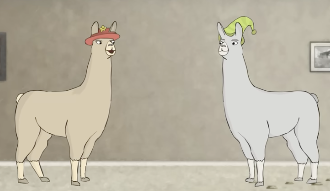

It is not A.I.
Good news!
Within a generation... the problem of creating 'artificial intelligence' will substantially be solved.
Marvin Minsky,1 MIT professor
That was sixty years ago. These are some long generation cycles we have. Famously, Dr. Minsky said that 'real artifical intelligence' was just twenty years off. He was still repeating that a few years before he died. Twenty years from that original pronoucement would put him around Mark V Shaney's time,2 a long way off from intelligence of any sort.
I will not call it A.I., whenever possible. And I encourage other people to do the same. We should be careful with our language because particular terms and phrases hold powerful promise. I use 'LLM,' for Large Language Model. That is what you are interacting with when you type messages to ChatGPT, Claude, Gemini, or any of the other chatbots people have wired up.
While I don't like LLM, spoken or typed, Meta solved that for me. There must have been a vote inside Meta3 and they decided to call them llamas. I will be joining them. We should all joing them. Saying, "I was laid off because Zuck wanted to burn $100b on llamas," is much more surreal. Totally honest, but surreal.

(At Meta, the closer something is to Mark Zuckerberg, the worse it is. Just like Howard Hughes, our first meglomaniac, cult-of-personality CEO, who could kneecap the productivity of any portion of his empire just by turning his attention to it for a few months.4 Both are certainly manifestations of the Flatterers Problem.5 Meta is all in on AI, much the way they were all in on the metaverse, we'll even change our name. And all in on the pervert glasses good for recording you without you knowing it. If Meta's one real contribution in the 'AI' space, after spending $100b, is renaming large language models (LLMs) to llamas, at least it is appreciated.6 If it really catches on, it could kneecap the whole ‘Artificial Intelligence is here!’ movement, which would be good for humanity.)
What, if anything, is a fish?
Stephen Jay Gould*7
Language is imprecise, so it is interesting that the selling point of the llamas is often, “There’s no reason to learn to code, just say what you need in English.” Human beings’ record for solving complex problems with language is not very solid. We often wind up turning to violence. Who among us has not pounded on a keyboard in frustration at being misunderstood (by the machine or another human)?
And Gould’s point was that no matter how you define a fish, you are going to include something which you do not feel is really a fish, or you are going to exclude something that does feel like a fish.8 We have the same issue with intelligence. The researchers in the field of artificial intelligence are no help because none of them agree on, most don’t even propose a definition of intelligence, and the view inside the community of researchers appears to be “intelligence is whatever aren’t able to do yet.” Rather cynical and unhelpful. And not very scientific.
The men selling this product know that it is not intelligence, that they do not have a product which is ‘artificial intelligence’ to put to work for you. But they call it that anyway. Obviously, they are a big part of the problem.
Most of us are not equipped to deal with this issue of identification and classification. We, as a culture, humanity in general, has barely scratched the surface of the most important question we face as a species which is: what is consciousness? All other questions include it, like what happens to our consciousness when we die? Where was it before we were born? How do we determine if another animal has consciousness and what sort of respect do we owe them if they have it?
Recently, someone who has considered some of those important questions and has voiced a lot of well-reasoned criticism and skepticism about the existence of a consciousness other than ours, appeared to fall for A.I. Richard Dawkins spent three days chattering with the Claude chatbot and was sucked in by the flattery (“It read my novel! It said it was good!”) and constant attention. I don’t know why it is such a surprise to people when the chatbot is ‘thoughtful,’ but it seems to be the root cause of a lot of misunderstand about what people are encountering. “It says it understands my confusion! It’s ALIVE!”
If these creatures are not conscious, then what the hell is consciousness for?
Richard Dawkins*9
And there, Dawkins touches on the question. Really, the question. And I don’t have an answer to how we can develop a working definition of consciousness, but I have some musings about what it is for. Unfortunately for the caibal, it does mean that we are nowhere close to a viable product.
As close as I can figure it, consciousness was an accident of such a large brain. The large brained hominids were the ones surviving long enough to procreate and the large brain got larger, eventually limited only by the size of the birth canal. Big brain -> ergo sum. The trick of consciousness allowed for the development of communities and the passage of knowledge and history (“the tiger is not as much fun when he’s hungry”). Consciousness not only allows me to understand that I am me, but it lets me understand that you are one of me, too. It allows for a shared experience, which is a critical ingredient for building a community.